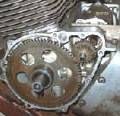

You press start and hear the starter motor spin fast, often with a high whirr, but the engine does not turn over. The motor works, but its drive is not reaching the crankshaft. MAVCC calls a slipping starter clutch the most common electric-start fault. The starter clutch (one-way clutch) sits behind the flywheel and is meant to lock when the starter drives and free itself once the engine runs.
Is it safe to ride?
Yes, if the bike starts with the kickstarter. Do not keep pressing the button: the spinning starter can damage the gears and the clutch further.
Quick checks first
- Does the engine start normally with the kickstarter?
- Did it happen suddenly, after a backfire, or after a cold morning?
- Was the starter recently removed or rewired?
- Is the battery fully charged?
Diagnose it step by step
1Is the battery fully charged?
- No: charge it and try again with Test and charge a 12 V battery. The K-Light 125 fault chart lists low battery power for this symptom.
- Yes: go to step 2.
2Was the starter recently removed, replaced or rewired?
- Yes: check that it turns the right way. A starter running backwards spins without turning the engine (K-Light 125 manual). Check the wiring against the diagram and the part number.
- No: go to step 3.
3Does the starter sometimes catch and turn the engine, sometimes not?
- Yes: the starter clutch is slipping. Go to step 5.
- No, it never turns the engine: go to step 4.
4Remove the starter. Is its gear, or the first reduction gear you can see, broken or stripped?
- Yes: replace the damaged gears. A workshop should also check the gear it meshes with. Remove and inspect the starter motor.
- No: go to step 5.
5. The starter clutch needs inspecting. This means removing the side cover and pulling the flywheel with the correct tools. Hand it to a workshop: Check the starter clutch. Meanwhile, use the kickstarter if the bike has one.
What happens if you keep using it: a slipping starter clutch can suddenly grab while the engine is turning, which can break gear teeth or the clutch body.
Causes, most likely first
| Cause | How to confirm | Fix |
|---|---|---|
| Flat battery (some designs slip when voltage is low) | Low voltage; works after charging | Test and charge a 12 V battery |
| Worn or sticking starter clutch rollers | Starter spins freely, sometimes catches | Check the starter clutch |
| Broken starter or idle gear teeth | Visible damage when the starter is removed | Remove and inspect the starter motor |
| Starter wired backwards or wrong part | After recent work; check turning direction | Correct the wiring or fit the right starter |
| Broken starter clutch spring or bolts | Found when the flywheel is removed | Check the starter clutch |